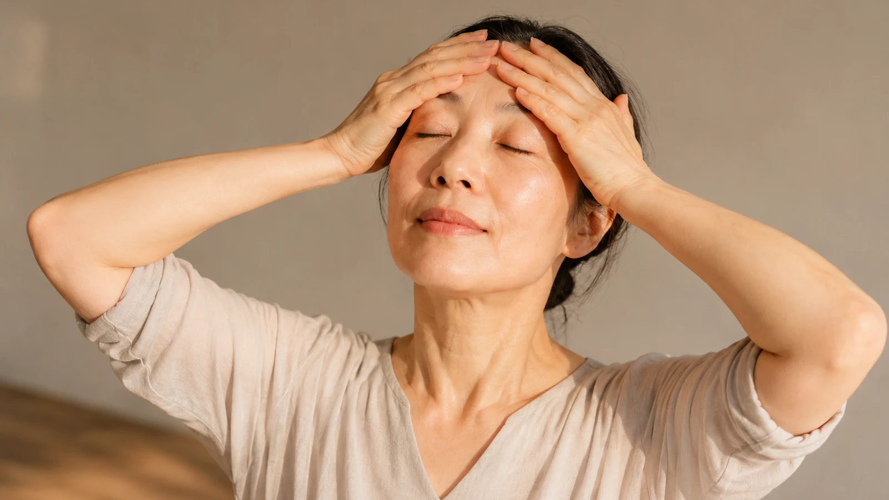
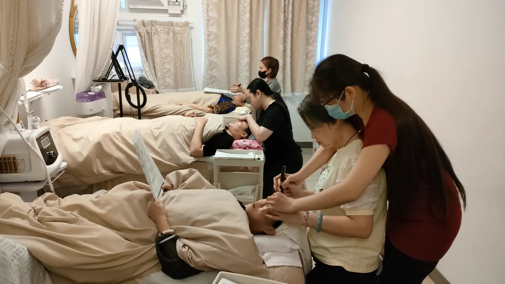

The Bojin Journal · Glow & Circulation
Why Your Whole Face Feels Different in Perimenopause

A student showed me a photo from her niece's graduation and said, "I don't recognize my own face anymore. And I can't even point to what changed." Nothing was wrong with her eyes. In perimenopause several changes arrive together, not single file, and a face changing on four fronts at once reads as a stranger in photos even when each single change is small. Naming the four separates a confusing blur into things you can work with.
Thinner skin, slower circulation, drier texture, shifting puffiness: perimenopause moves all four at once. An honest map, and a gentler routine for it. Remember: this is a gentle, supported self-care observation you can test on one side of your face—never a forceful press or medical treatment.
Four changes, one arrival
None of these are secrets. What's rare is seeing them side by side, and the side-by-side view is what turns "my face is off" into a list.
Thinner skin, slower circulation, drier texture, and shifting fluid retention tend to move together through perimenopause. Four small changes at once read as one big unnameable one. Split them apart, and each has its own honest answer, including the ones a face routine can't touch.

Thinner skin. Lower estrogen thins the skin and its collagen support. The face bruises more easily and shows tension and fine lines it used to hide. This change also rewrites the rules of pressure: what your cheeks tolerated at forty is too much now.
Slower circulation. Less natural warmth reaches the surface, so skin reads flatter, with less of the flush that used to arrive on its own after a walk or a laugh.
Drier texture. Skin makes less oil and holds less water. The moisturizer that served you for a decade starts coming up short, and the dullness that follows has nothing to do with your product choices.
Shifting fluid retention. Puffy on Tuesday, fine on Thursday, with no pattern you can plan around. This unpredictability is its own frustration, and it belongs on the list as much as the other three.
What a gentle release can reach
Hands cannot change hormone levels, and this page makes no claim on hot flashes, sleep, or anything else your doctor covers. Within its own lane, a consistent, light release supports circulation and moves settled fluid along, which touches three of the four changes above in a modest, real way. The fourth, thinner skin, sets the terms: everything below runs on lighter pressure and more glide than a standard routine.
A whole-face circulation sweep

Use more oil or cream than feels necessary
Drier texture plus thinner skin means glide is your protection. When in doubt, add another drop.
Forehead: center to temples
Slow passes from the middle of the forehead outward, at the light end of comfortable. You should feel contact, never drag.
Cheeks: nose to ears, upward
Sweep from beside the nose up and out toward the ears. Circulation and a little lift, invited rather than forced.
Jaw, then down the neck
Follow the jawbone to the ear, then sweep down the neck in unhurried passes. Fluid needs this exit more than any other step, so give it the most patience.
Close with both palms on your cheeks
Three slow breaths, warmth, no technique. Then your usual moisturizer onto skin that's ready to take it.
An honest frame for this stage
Consistent sessions help skin look more awake and less flat on an ordinary day, and the effect stays gentle and temporary, renewed by the habit rather than banked. Nothing here restores collagen, thickens skin, or reaches the hormones underneath. This is good care through a stretch of real change, not a reversal of it. For everything beyond how your skin looks, your doctor holds that conversation, and it deserves to be held.
You aren't imagining the stranger in the photos, and she isn't a stranger. She's you, four small changes later, and each one now has a name and its own next step.
Quick answers
Is this different from what you'd recommend for menopause itself?
The approach stays the same. This guide maps the whole-face pattern; two other guides on this site zoom in on one area, the eyes and the space between the brows. Start with whichever matches what bothers you most. They are built to work together.
Can this help with hot flashes or other symptoms?
No. This is a face and circulation habit, and it has no reach into hormones. If hot flashes, broken sleep, or mood are weighing on you, bring them to your doctor. A five-minute face routine has no business pretending to cover that ground, and I won't pretend it does.
Why does my skin suddenly need more moisture than it used to?
Lower estrogen means your skin makes less oil and holds less water, so the routine that served you for a decade starts coming up short through no fault of yours. Richer products help. So does the circulation this release supports, which helps skin make use of the hydration you give it.
How is this different from a regular glow routine?
It is built for the specific combination this stage brings: drier texture, slower circulation, and unpredictable puffiness arriving together, on skin that now bruises more easily. The order below serves that combination, with lighter pressure than a standard glow routine assumes.
See the lighter-pressure sweep in motion
This stage calls for a gentler touch than most routines assume, and pressure is easier to calibrate by eye than by description. My free 3-minute video shows the exact weight and pace.
Watch the free 3-min videoYu-Ting Lan is a Taiwan-based international bojin instructor and the founder of Héhé Studio. She has taught her bojin method to more than a thousand students, from complete beginners to grandmothers, across Taiwan, Hong Kong, and Malaysia.